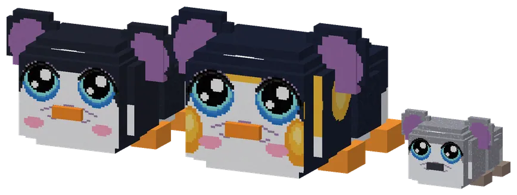
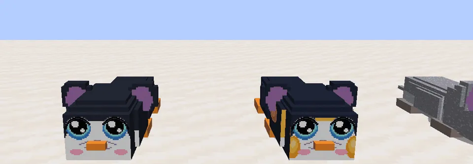
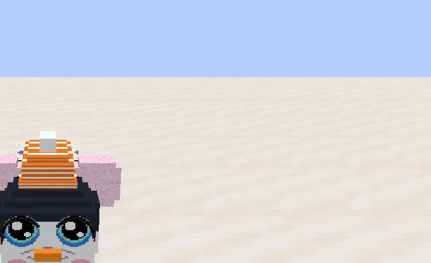
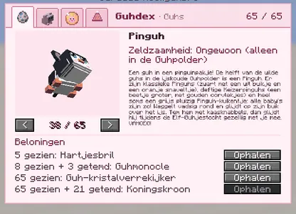
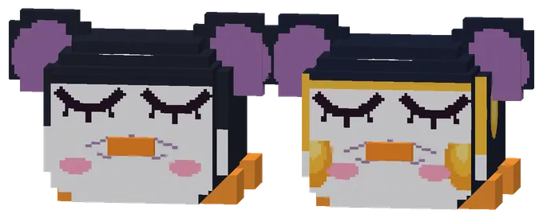
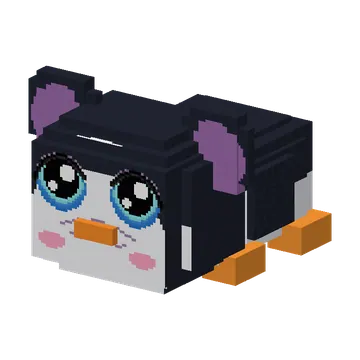
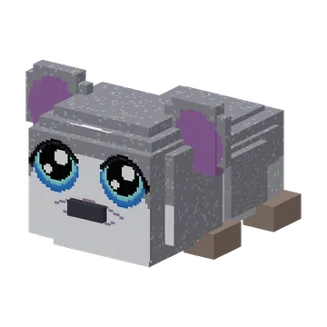

Een guh in een pinguinpakje! De helft van de wilde guhs in de ijskoude Guhpolder is een Pinguh. Er zijn klassieke Pinguhs (zwart met een wit buikje en een oranje snaveltje), deftige Keizerpinguhs (een beetje groter, met gouden wangetjes) en heel soms een grijs pluizig Pinguh-kuikentje: alle baby's zijn zo! Waggelt vadsig rond en glijdt op zijn buik over het ijs. Tem hem met kaasknabbels, dan glijdt hij tijdens de Elf-Guhjestocht gezellig met je mee. VAHOEG!

The PinguhDe Pinguh
A guh in a penguin suit! About half of the wild guhs in the Guhpolder are a Pinguh (a new variant after the Pluisguh). There are klassieke Pinguhs (a black back and head, a white tummy and face around the big guh eyes, an orange beak with pink blush, flippers and orange feet), stately Keizerpinguhs (a bit bigger once grown, with golden cheek patches beside the eyes, a thin golden brow and golden patches by the ears, so you know them from the front too) and now and then a grey, fluffy Pinguh chick: every baby looks like that. It waddles vadsig about and slides on its tummy over the ice. Tame one with kaasknabbels for its Guhdex star; it wears clothes like any guh, and during the Elf-Guhjestocht it slides along behind you. There is a Pinguhknuffel in the grijpmachine too (now 22 plushies).
Een guh in een pinguinpakje! Ongeveer de helft van de wilde guhs in de Guhpolder is een Pinguh (een nieuwe variant na de Pluisguh). Er zijn klassieke Pinguhs (zwarte rug en kop, een wit buikje en een wit gezicht rond de grote guhogen, een oranje snaveltje met roze blosjes, flippers en oranje pootjes), deftige Keizerpinguhs (als ze groot zijn een beetje groter, met gouden wangvlekjes naast de ogen, een dun gouden wenkbrauwtje en gouden vlekjes bij de oren, dus je herkent ze ook van voren) en heel soms een grijs pluizig Pinguh-kuikentje: alle baby's zien er zo uit. Hij waggelt vadsig rond en glijdt op zijn buik over het ijs. Tem er een met kaasknabbels voor zijn Guhdex-ster; hij draagt kleertjes zoals elke guh, en tijdens de Elf-Guhjestocht glijdt hij gezellig achter je aan. In de grijpmachine zit ook een Pinguhknuffel (nu 22 knuffels).
- WhereWaar
- Guhpolder
- ChanceKans
- 1 in 2 wild guhs there1 op 2 wilde guhs daar
- TameTemmen
 kaasknabbels
kaasknabbels

Klassiek, keizer and pluisKlassiek, keizer en pluis
In the game: a klassieke Pinguh, a Keizerpinguh and a Pinguh chick lying on the snow.
In het spel: een klassieke Pinguh, een Keizerpinguh en een Pinguh-kuikentje op de sneeuw.

Dressed upAangekleed
A Pinguh with a sjoelpetje. Every piece of clothing fits a Pinguh too.
Een Pinguh met een sjoelpetje. Alle kleertjes passen ook een Pinguh.
The Guhdex and the superkompasDe Guhdex en het superkompas

The Pinguh's pageDe pagina van de Pinguh
Page 38 of 65.Pagina 38 van 65.

Sleeping PinguhsSlapende Pinguhs
Even a Pinguh keeps its white face when it dozes off.
Zelfs een Pinguh houdt zijn witte gezichtje als hij indut.
PicturesPlaatjes


See alsoZie ook
 GuhpolderBiomesBiomen
GuhpolderBiomesBiomen Taming, riding and picking upTemmen, rijden en oppakkenMechanicsSystemen
Taming, riding and picking upTemmen, rijden en oppakkenMechanicsSystemen